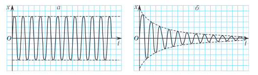
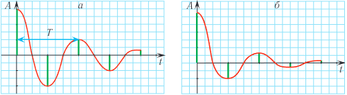
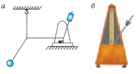
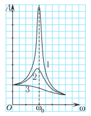
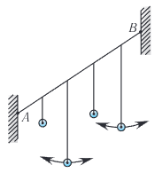
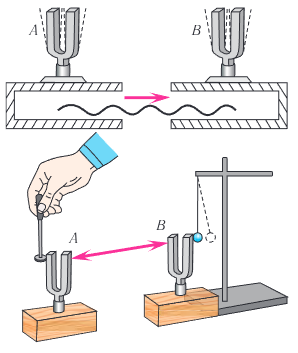

Видеоурок по теме
§ 4. Свободные и вынужденные колебания. Резонанс
Колебания груза, подвешенного на нити, с течением времени затухают, поскольку в системе действуют силы трения и сопротивления воздуха. При каких условиях механические колебания не затухают? Можно ли добиться увеличения амплитуды колебаний, используя внешнее воздействие?
Силы взаимодействия тел системы называют внутренними. Тела, не входящие в систему, называются внешними телами. Силы, которые действуют на тела системы со стороны внешних тел, называют внешними силами.
Колебания, происходящие с постоянной во времени амплитудой, называются незатухающими колебаниями (рис. 23, а). Незатухающие колебания, которые совершает система около положения устойчивого равновесия под действием внутренних сил после того, как она была выведена из состояния равновесия и предоставлена самой себе, называются свободными (собственными) колебаниями.
Свободные колебания (в отсутствие трения) происходят со строго определенной частотой ω0, называемой частотой свободных (собственных) колебаний системы. Эта частота зависит только от параметров системы.


Примерами таких колебаний могут служить колебания математического и пружинного маятников, происходящие в отсутствие сил трения.
Амплитуда свободных колебаний определяется начальными условиями, т. е. тем начальным отклонением или толчком, который приведет в движение маятник или груз на пружине. Свободные колебания являются самым простым видом колебаний.
В любой реальной колебательной системе всегда присутствуют силы трения (сопротивления), поэтому механическая энергия системы с течением времени уменьшается, переходя во внутреннюю энергию. Убыль механической энергии приводит к уменьшению амплитуды колебаний.
Колебания, амплитуда которых уменьшается с течением времени вследствие потери энергии колебательной системой, называются затухающими колебаниями (рис. 23, б).
При малых потерях энергии колебания можно считать периодическими и пользоваться такими понятиями, как период и частота колебаний, считая периодом промежуток времени между двумя последовательными максимумами смещения х(t) (рис. 24, а).
Колебания в любой реальной системе рано или поздно затухают. Чтобы колебания не затухали, необходимо воздействие внешней силы. Однако не всякая внешняя сила заставляет систему двигаться периодически. Например, невозможно раскачать качели, если действовать на них постоянной силой.
Проведем следующий эксперимент. Соединим математический маятник с метрономом тонким легким стержнем (рис. 25, а). Изменяя частоту колебаний метронома (рис. 25, б), добиваемся увеличения амплитуды колебаний математического маятника. Оказывается, что его амплитуда будет максимальной при совпадении собственной частоты колебаний маятника и метронома.

б — внешний вид метронома
Колебания тел под действием внешней периодической силы называются вынужденными, а сила — вынуждающей. В случае действия гармонической вынуждающей силы, например F(t) = F0 sin ωt или F(t) = F0 cos ωt, вначале наблюдается достаточно сложное движение тела. Спустя некоторое время после начала действия вынуждающей силы колебания при наличии трения приобретают стационарный характер и не зависят от начальных условий. Частота установившихся вынужденных колебаний всегда равна частоте вынуждающей силы.
Амплитуда и энергия вынужденных колебаний зависят от того, насколько различаются частота вынуждающей силы ω и частота собственных колебаний ω0, а также от величины трения (сопротивления) в системе.
При вынужденных колебаниях возможно явление, называемое резонансом (от лат. слова resono — откликаться).
Резонанс — это явление резкого возрастания амплитуды вынужденных колебаний при приближении частоты ω внешней силы, действующей на колебательную систему, к частоте ω0 собственных колебаний системы (ω → ω0) (рис. 26).


Подвесим на упругой нити (АВ) четыре математических маятника с одинаковыми грузами, три из которых имеют различную длину, а длина четвертого равна длине второго (рис. 27). Сначала посмотрим, что будет с маятниками, если раскачать первый или третий маятник.
Наблюдения показывают, что через некоторое время начнут качаться и остальные маятники. Но амплитуда их колебаний мала и вскоре колебания затухают. А вот если раскачать второй маятник, то амплитуда колебаний четвертого будет возрастать, пока не достигнет достаточно большого значения.
Это происходит потому, что частота внешней силы, действующей на четвертый маятник, совпадает с частотой его собственных колебаний (т. к. длины второго и четвертого маятников равны). Мы наблюдаем явление резонанса.
Подчеркнем, что при резонансе создаются оптимальные условия для передачи энергии от внешнего источника к колебательной системе.

Так при возбуждении камертона А (рис. 28) такой же камертон В через некоторое время также начинает активно звучать. При этом исходной внешней силой является удар молотком по первому камертону, а внешней силой, действующей на второй камертон, — сила давления воздуха при колебаниях.
Вспомним также процесс раскачивания на качелях. Если их раскачивать с очень малой или очень большой частотой, то эффект будет крайне мал. Раскачивание будет очень эффективным, если подобрать частоту толчков, равную частоте собственных колебаний качелей.
Большинство сооружений и механизмов способно совершать свободные колебания. При внешних периодических воздействиях с частотой, близкой к резонансной, в них могут возбуждаться колебания большой амплитуды, что может привести к разрушительным последствиям. В связи с этим, например, при прохождении по мостам войсковых частей солдатам дают команду идти вольным шагом (не в ногу). По той же причине поезда движутся по мостам либо очень медленно, либо на максимальной скорости.
Нажмите на иконку или кнопку для прослушивания.